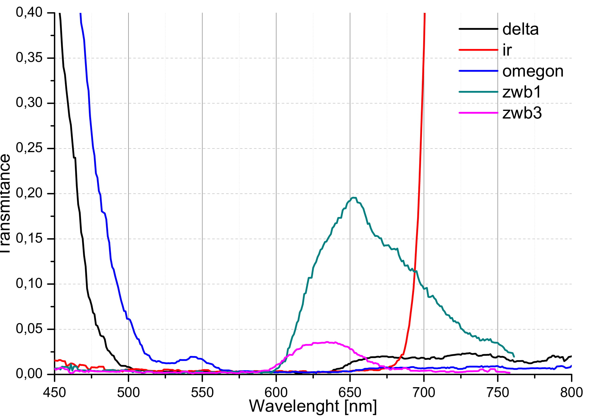
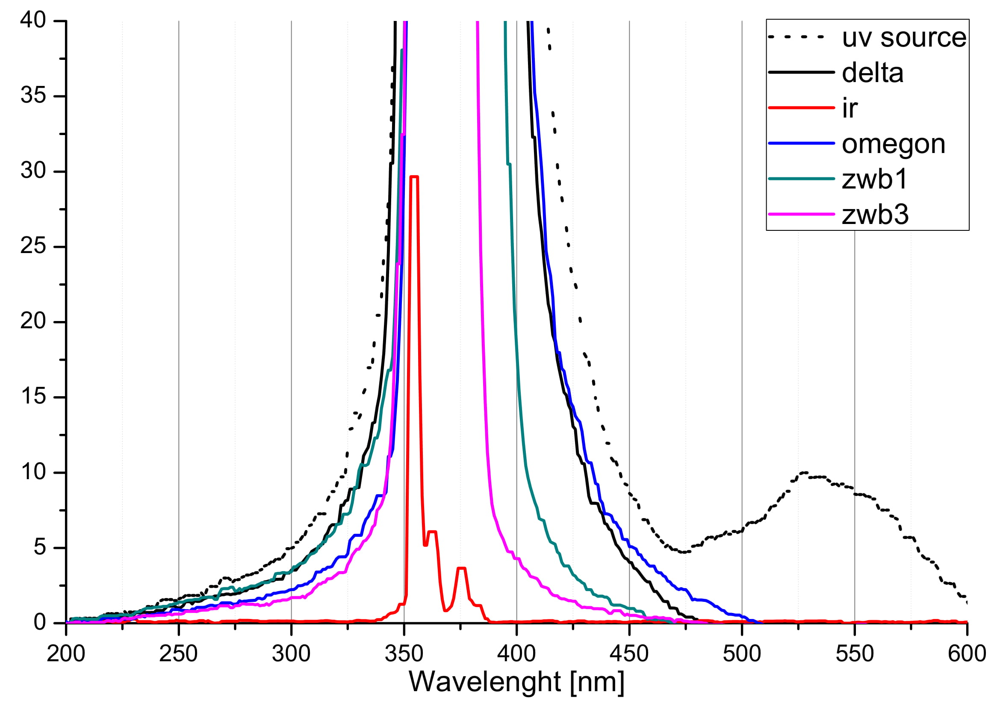

I recently tested effectiveness of combining two filters in purpose of creating cheap UV pass filter. I bought two UV filters ZWB1 and ZWB3, IR filter and two blue colored glass filters used in astronomy from delta and omegon. Blue filters ( #38a ) are “same ones” from different manufactures but their transmission statistics differ.
Apart from the fact that the blue glass filters are visibly different color ( you can spot the difference with naked eye ) they both cut off infrared leakage very well. Omegon version is slightly better, but it’s possible that this producer releases some batches with different characteristics. The price, which is about only $12 compensates for divergence, and with use of ZWB1 or ZWB3 filter produces fine isolated UV output.
Both filters transmit UV with almost no loss. The presented IR filter is: ProPlanet 742 IR. In conclusion for decent and cheap UV filter you can combine blue glass filter #38a and ZWB1 (more light, wider spectrum) or ZWB3 (narrower spectrum, less IR leakage).